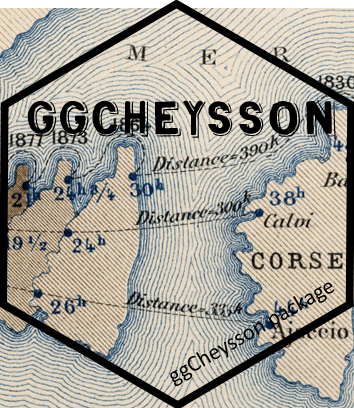
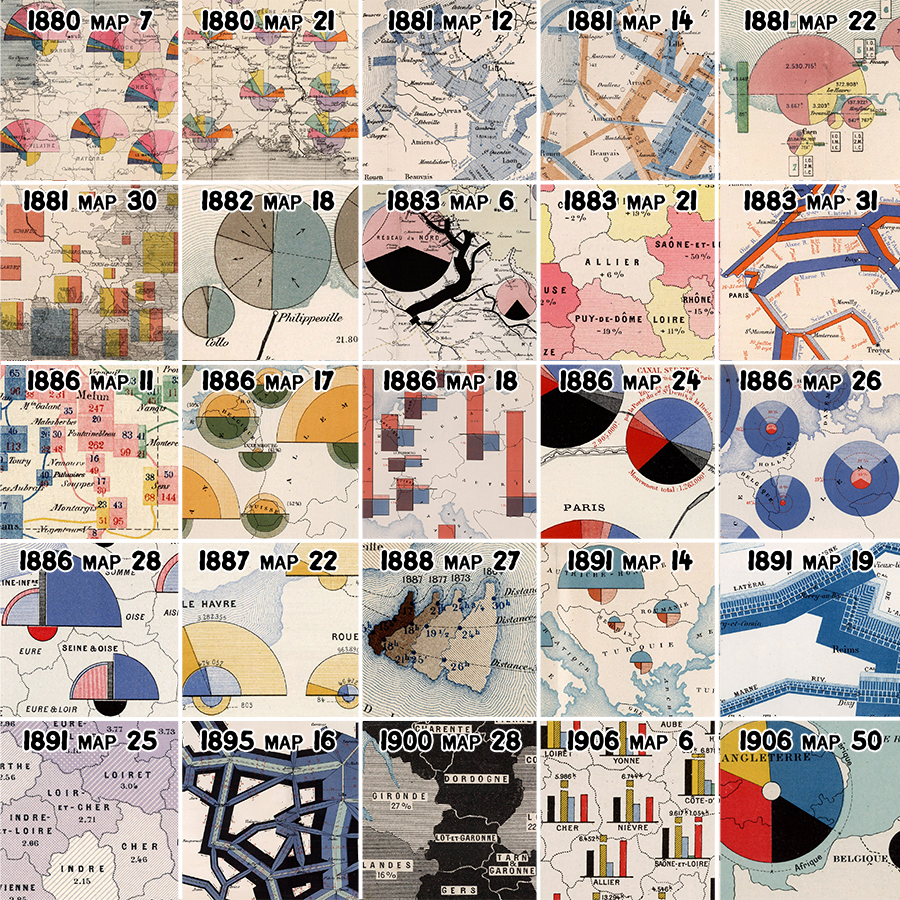
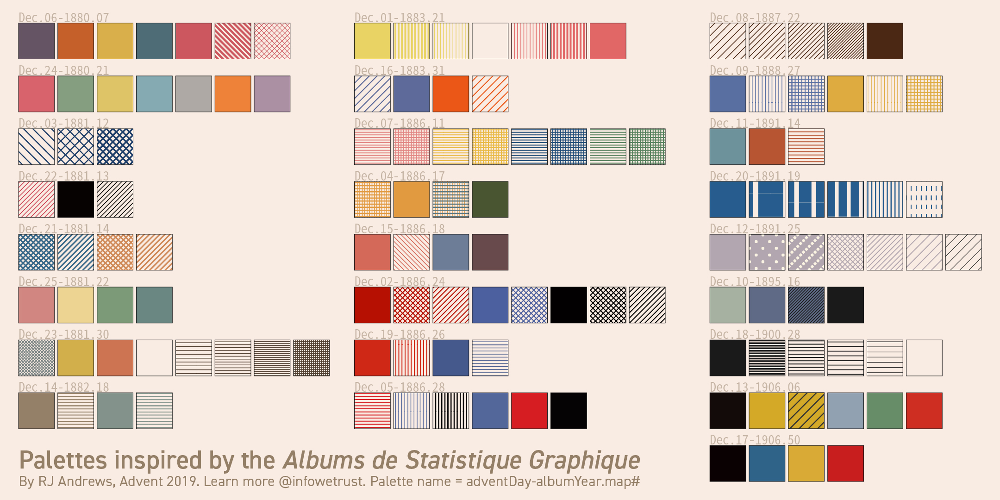
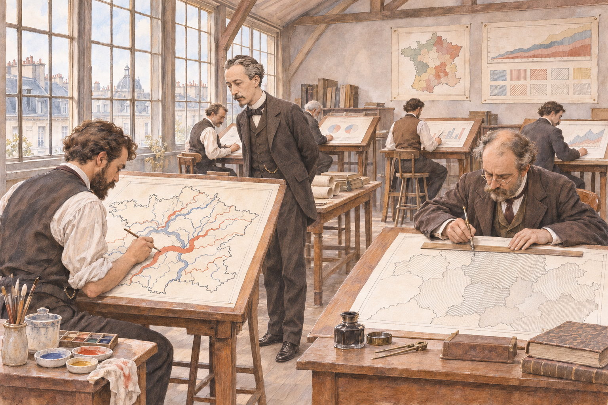
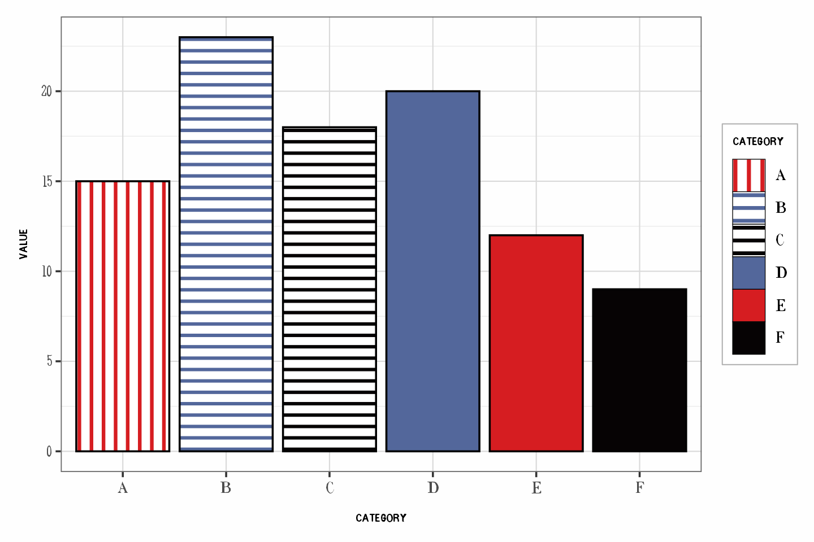
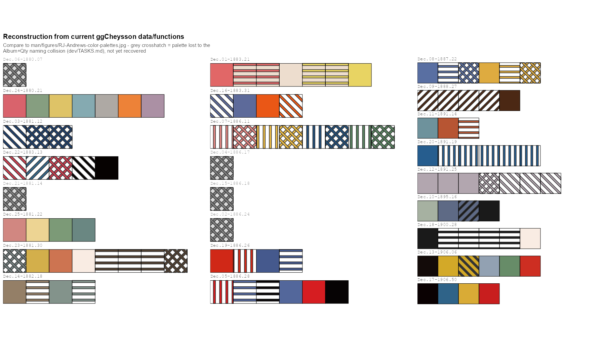
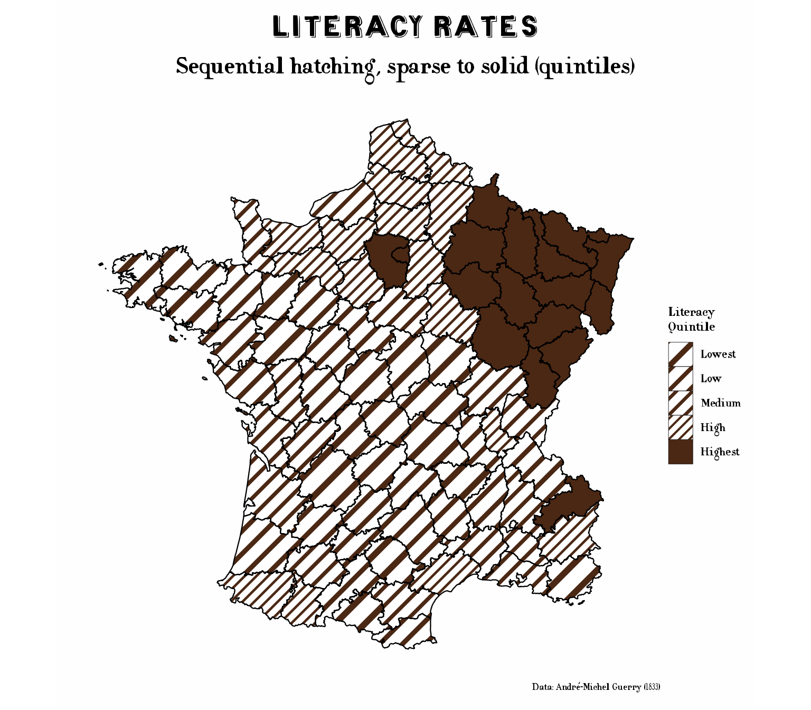
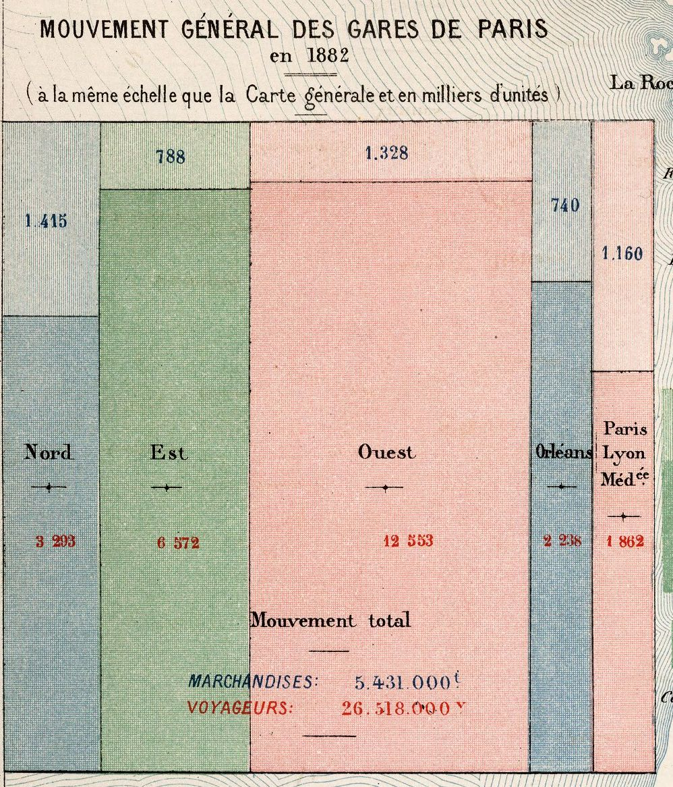
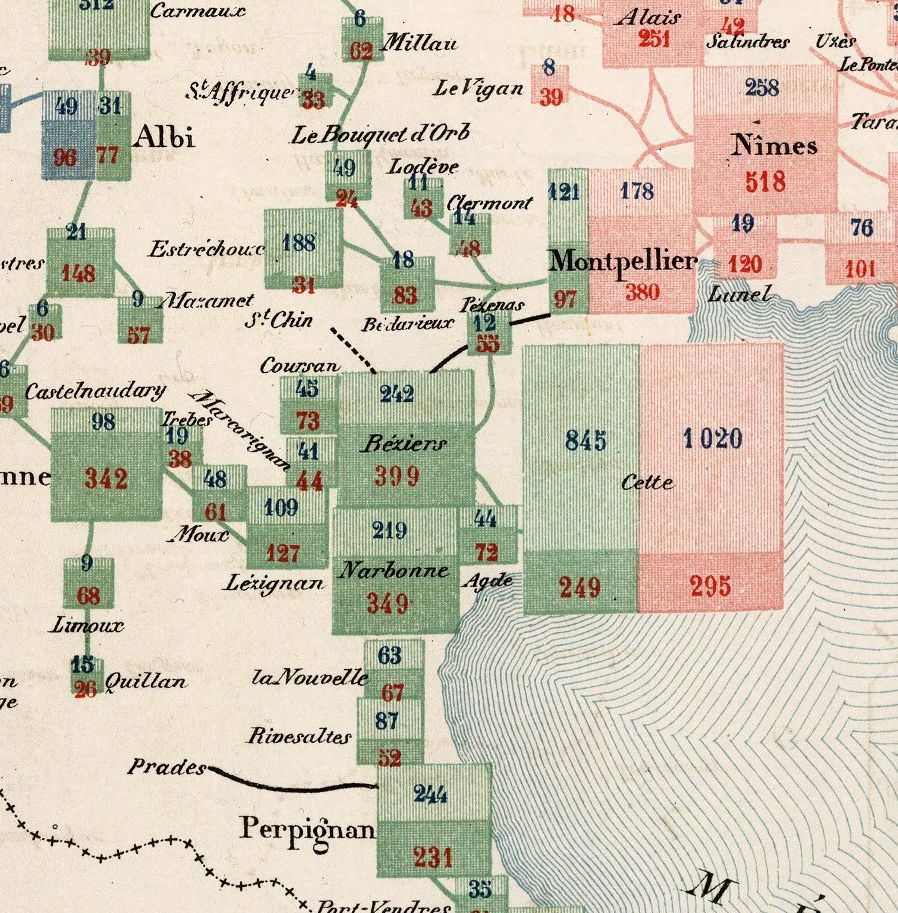

A dream trip to 1886, with a laptop full of hex stickers and some questions
history
dataviz
R packages
ggplot2
Chevaliers
time travel
The Albums de Statistique Graphique are the high point of the Golden Age of statistical graphics. What happened when I tried to bring their colours, hatching and hand-lettering into R, told as a dream visit to Cheysson’s drawing office.
Author
Michael Friendly
Published
November 11, 2026

The French Albums de Statistique Graphique, produced by the Ministry of Public Works from 1879 to 1897 under the direction of Émile Cheysson (with two later volumes, in 1900 and 1906), have impressed me since the day Antoine de Falguerolles showed me a copy of the 1884 volume. I still think of them as perhaps the finest achievement of what I’ve called the Golden Age of Statistical Graphics: maps of freight and passengers, rivers of trade flowing into French ports, pie charts sitting on the cities they describe. All of it was drawn and coloured by hand, and all of it is beautiful. (I said more about how I fell for them in a recent interview with Attila Bátorfy.)

Figure 1: Details from 25 plates of the Albums, 1880 to 1906: pie charts on cities, flow bands along rivers and canals, and regions shaded and hatched by hand. Each is the source of one palette in ggCheysson. Crops by RJ Andrews.
I was so taken with them that I tracked down a complete set in an antiquarian bookshop in Paris. It was more than I could buy on my own, so I formed a small group of co-conspirators, Les Chevaliers des Albums de Statistique Graphique, to purchase them. (The Chevaliers have since gone on to other adventures, mostly involving cemeteries.) Later, I convinced fellow Chevalier David Rumsey to find and digitize the entire collection, so that anyone can now zoom in on the brush strokes and marvel at their design.
So I was delighted when RJ Andrews ran a month-long Twitter thread, an Advent calendar of sorts, in which each day he took one plate from the Albums and pulled out its colours and hatching patterns as a reusable palette. He collected all 25 in January 2020 as Classic Map Color Design (Figure 2). Tom Shanley soon turned Andrews’ swatches into an Observable notebook for D3, and Kenneth Field went further still and made hand-drawn fonts from the lettering on the plates.

Figure 2: RJ Andrews’ 25 palettes from the Albums, one for each day of his Advent calendar. Source: infowetrust.com.
Colours for D3, fonts for ArcGIS. What was missing was a way to make graphs in this style in R, my own home ground. That became ggCheysson, and this post is the story of making it. (Version 1.2.0 is on CRAN: install.packages("ggCheysson").) I could tell this story the usual way: a list of design decisions, bugs found and fixed, and a few lessons learned. But the more I worked on it, the more I found myself wondering what Cheysson and his draftsmen would have made of the whole enterprise to reproduce their style. So I went to ask them.
A ticket to 1886

Figure 3: I arrived in time to see next year’s Album taking shape. Cheysson was looking over a river map, and at the next table a draftsman was ruling hatch lines with a steadiness I could only envy.
I should explain that I have recently discovered I can travel in time, though only in my dreams. (I discovered this skill after re-reading Edwin Abbott’s Flatland, about a Square who encounters a Sphere, and learned to travel in higher dimensions, in his imagination. Hey, time is just one more dimension.)
The Albums had been on my mind for months, so one night I booked a round trip: YYZ (2026) to CDG (1886), with an open return ticket. The booking went through without a hitch, which worried me more than if it hadn’t. Did I need a visa? Was my passport sufficiently down-to-date? And did my time-travel SKILL.md say anything about who would build the aeroplane, or the airport?
Whatever the answers, I arrived. I had packed light: a bottle of Niagara ice-wine and a tin of Canadian maple syrup for Monsieur Cheysson, and my laptop, with R 4.6.1, ggplot2, and my library of packages that extend it. Self-contained; no need for a Wi-Fi connection.
The drawing office was at the top of the Ministry, where the light was best, in the old Hôtel de Roquelaure on the boulevard Saint-Germain. Half a dozen draftsmen sat at tall tables, working on the plates for next year’s Album. One was laying bands of colour along the rivers of France, each as wide as the tonnage it carried. Another was ruling hatch lines, very close together, with a steadiness I could only envy.
Cheysson received the ice-wine graciously and the maple syrup with genuine curiosity. I said, “Try this on pancakes.” What interested him most, though, was the lid of my laptop, which is covered in hexagons. I explained that in my time every useful piece of software comes with a sticker, and that people collect them. He studied them for a while. In his office, he said, a useful thing comes with a plate number.
I had come with three questions to start the discussion with Émile & his colleagues:
What can we learn from each other?
How should I design an R package that lets people make graphics in your style?
What will be hard about this once I’m back in Toronto?
We talked until the lamps were lit. What follows is roughly what came up, in the order it came up.
Drawn, drawn again, passed along, described
I spent a long time watching the draftsman who was ruling hatch lines. When he paused, I asked him how he knew how far apart to draw them. He held up a finished plate: comme ça. Like this one.
That, it turns out, is how a swatch travelled for the next 140 years: as a picture. Cheysson’s draftsmen drew each one on the plate. Andrews drew them again, as small SVG tiles. Tom Shanley’s notebook simply passed Andrews’ tiles along. In a web browser, a tile is a perfectly good fill, so one line, fill: pattern(#id), paints a bar or a whole map region with it, and the browser does the rest. (I compared the two approaches in more detail in some working notes.)
ggplot2 has no easy way to fill a bar with someone else’s picture described in SVG. So ggCheysson has to describe each swatch instead: read Andrews’ SVG, reduce it to a handful of numbers, and then draw it using gridpattern notation. Here is the first swatch of palette 1886_28, Cheysson’s red vertical stripes, as the package sees them:
str(cheysson_patterns[["1886_28"]]$patterns[[1]])
#> List of 9
#> $ type : chr "stripe"
#> $ fill : chr "transparent"
#> $ pattern_fill : chr "#d61d21"
#> $ pattern_color : chr "#d61d21"
#> $ pattern_angle : num 90
#> $ pattern_density : num 0.941
#> $ pattern_spacing : num 0.0588
#> $ pattern_linewidth: num 2
#> $ direction : chr "vertical"
To ggplot2, in other words, a swatch is a printer’s spec sheet: type, colour, angle, spacing, line width. Nearly every bug I met lived in the translation from picture to spec sheet. SVG lets you leave out a coordinate that is zero, and Andrews often did; my first parser insisted on all four, silently threw away every line it couldn’t read, and left 15 swatches in 6 palettes empty. His files came in two dialects (one hand-written, one apparently exported from Illustrator). And some things simply have no number to go in: the round white dots of 1891_25 and the dashed stripes of 1891_19 were lost in translation, and still are.
Then there was the plumbing. In ggplot2 every visual property is a separate aesthetic, with its own scale_*() mapping a data value into what is drawn. So in version 1.1.0, applying one of Cheysson’s palettes to a bar chart took five mappings and five scales:
# ggCheysson 1.1.0pats <-cheysson_pattern("1886_28") # the palette's list of swatch specsggplot(d, aes(category, value, fill = category)) +geom_col_pattern(aes(pattern = category, pattern_fill = category,pattern_fill2 = category, pattern_angle = category),pattern_density =0.35, colour ="black") +scale_fill_cheysson_pattern("1886_28") +scale_pattern_manual(values =cheysson_pattern_params(pats, "pattern_type")) +scale_pattern_fill_manual(values =cheysson_pattern_params(pats, "pattern_fill")) +scale_pattern_fill2_cheysson("1886_28") +scale_pattern_angle_cheysson("1886_28")
It worked, but nobody would call it Cheysson’s style. The fix, in version 1.2.0, was to stop splitting a swatch into parts. Each of the 134 swatches is now registered with gridpattern as a pattern of its own, with a name ("1886_28-1", "1886_28-2", …), and scale_cheysson() simply hands out names:
d <-data.frame(category = LETTERS[1:6], value =c(15, 23, 18, 20, 12, 9))ggplot(d, aes(category, value, pattern = category)) +geom_col_pattern(colour ="black") +scale_cheysson("1886_28") +theme_cheysson()

Figure 4: Palette 1886_28 applied with scale_cheysson(). The legend keys are the same swatches as the bars.
That is exactly what Shanley’s notebook did on day one: a swatch is known by its name. Getting R back to that point took me several detours, a function new in gridpattern 1.5.0 (register_pattern()), and patient advice from its author, Trevor Davis, in a GitHub issue.
When I showed Cheysson the three lines of code, he nodded. Of course a swatch is known by its name, he said. By its plate number.
show_swatches() draws the whole collection, or any part of it, as an atlas (Figure 5). A swatch’s name is its row and column.
Figure 5: Four of the 25 palettes, one of each type, drawn by show_swatches().
Three names for the same 25 plates
Plate numbers turned out to be a sore point. On Cheysson’s table I laid out three index cards, all for the plate on his wall: Dec.05-1886.28, category12516028, and 1886_28. He read them twice and asked, very politely, why one plate needed three names.
Because three people named it, each for good reasons of his own. Andrews labelled his palettes by the day of his Advent calendar on which they appeared, plus album and plate. Shanley used the palette type and the catalogue number from the David Rumsey collection. I used album year and plate. None of us was wrong, and none of us agreed with the others.
So the package now carries a crosswalk, cheysson_labels, that lets you go from any one name to the others. Here are the six palettes from the 1886 Album:
Building it was a small lesson in how names drift when they are copied by hand. Two of Shanley’s IDs have typos (diverging12541021 has two digits swapped; category1252605 has lost its last one), and in a few places his notebook disagrees with itself, because a display name was copied from a neighbouring cell and never changed. I don’t say this to pick on Tom, whose notebook is lovely and whose design, as you’ve seen, was right all along. The point is that any name typed twice will, sooner or later, be typed two ways.
I also had to confess something to Cheysson. Even the “plate” in 1886_28 is not really his plate number. It is the suffix of Rumsey’s catalogue number, the best unique key we have. His own numbering isn’t in any of our data.
The bug that ate five plates
Cheysson then asked how many plates I had brought. Twenty-five, I said. Then, because he was looking at me, I admitted that for most of this year my software had quietly kept only twenty.
The first versions of the package built each palette’s name from the album year and a field called Qty, which I took to be the plate number. It isn’t: it’s a count of the colours and patterns in the palette, and different plates in the same album can have the same count. Three palettes from 1886, for example, all have four elements, so all three were named 1886_04. Each was stored with a plain palettes[[name]] <- ..., so each one overwrote the one before. No error, no warning. Four such collisions, and 5 of the 25 palettes were simply gone, through a release on CRAN and the months that followed.
I found out only by rebuilding Andrews’ grid of palettes, row by row, from the package’s own data, and setting it beside his (Figure 6). Some rows had nothing to show.

Figure 6: The reconstruction of Andrews’ grid that exposed the bug, as first drawn in September 2026. Each grey crosshatched placeholder is a palette lost to the naming collision. All 25 were restored in version 1.1.0.
The fix was to build names from Rumsey’s catalogue number, which really is unique. That brought back all 25 palettes, but it renamed 19 of the 20 that had shipped, so version 1.1.0 also had to tell users of the old names where their palette had gone.
Cheysson grinned and chuckled at this. His archive, he observed, had never lost a plate to arithmetic. A few were lost in his edits of the Albums, but these were due to redundancy or failure to meet his standard of truth and beauty.
Cheysson had no need of underscores
The lettering draftsman, whose titles I had admired all afternoon, was the next person I showed the laptop to. On the screen was one of my plot titles, Palette 1880 followed by a small empty box and 21. I asked if he could draw me the missing character. He asked what it was for.
He had a point. The package’s fonts, which Kenneth Field drew from the lettering on the plates, have no underscore. (They come with the package; load_cheysson_fonts() makes them available to your graphics device, once per session.) Not one of the five families:
fams <- cheysson_fonts$familysapply(fams, function(f) systemfonts::glyph_info("_", family = f)$name)
.notdef is a font’s way of saying “I have nothing for this”. So any title or label in a Cheysson font that contains a palette name, like 1880_21, can come out with a little box (tofu, in the trade) where the underscore should be. Some graphics devices quietly borrow the missing character from another font, so you may never see the box. Others don’t.
There was nothing to fix in the font. An 1880s alphabet had no use for a character that came in with the typewriter, for underlining, and was later taken up by programmers. I changed my text instead: the title now reads Palette 1880, Plate 21. Cheysson had no need of underscores!
Let the title fill the page
Next to the plate on the wall I held up the laptop, with a map drawn with a default ggplot2 theme. Cheysson looked from one to the other and asked why my title was so timid.
I had already had a version of this conversation with myself. Someone (me) complained that the text in the package’s vignettes was too small. I measured: the sizes of title, axis labels and legend relative to each other were exactly those of theme_minimal(). The trouble was absolute size. An 11-point theme in a 7-inch figure looks small next to the text of a web page, and a ggplot2 theme has to work at whatever size the reader’s window happens to be. Cheysson’s plates were engraved once, for one page, and every element on them knew how big it was. Mine never do.
For maps, though, the old convention had more to teach than the size of the page. On the maps of André-Michel Guerry, which Cheysson may well have known, the title runs nearly the whole width of the map. No default ggplot2 theme would ever choose that: the panel dominates, and the title is a modest line at the top. A single ratio of title to body text couldn’t give me both, because a title big enough for Guerry would have blown the legend text up to 30 points along with it.
So theme_cheysson_map() now has its own, poster-style hierarchy: the title at five times the base size (55 points at the default base_size = 11, up from about 17), and the subtitle, legend and caption scaled up to match (Figure 7). Here the 19th century didn’t just lend me colours; it changed a design decision.

Figure 7: Literacy in Guerry’s data (1833), from the package’s Guerry maps vignette, with theme_cheysson_map()’s large title and the sequential hatching of palette 1888_27.
The eye, which no package supplies
Colours, fonts and title sizes were the things I could pack into the laptop and carry home. What I most wanted to learn from Cheysson’s office was something no package supplies: the eye for choosing the right visual form for a given set of numbers. The Albums have no house “chart type” or “house style”. Nearly every plate is a fresh decision: flow bands along rivers and railways, as wide as the traffic they carried; pie charts sitting on the cities they describe; bars, squares and sectors arranged on the map wherever the data lived.
It begins in Paris (Figure 8 (a)). Each of the five railway companies with a terminus in the capital (Nord, Est, Ouest, Orléans and Paris-Lyon-Méditerranée) gets a column, in its own colour, and each column is split into goods above, in thousands of tonnes, and passengers below, in thousands of travellers. Then the same design goes out across the map (Figure 8 (b)). Every station gets its own small block, split the same way into goods and passengers, in the colour of the company that serves it. Where two companies meet, as at Cette (now Sète) or Montpellier, their blocks stand side by side. The inset is even drawn “at the same scale as the general map”, so a Paris terminus can be compared, by area, with Narbonne or Perpignan.

(a) The five Paris termini. Totals for all of them: 5,431,000 tonnes of goods and 26,518,000 passengers.

(b) Languedoc, from Albi and Nîmes to Perpignan. Green is the Midi company, pink the PLM.
Figure 8: Two details of the Carte figurative des expéditions de voyageurs et de marchandises effectuées en 1882, Album de Statistique Graphique de 1884. In each block, goods are on top (blue numbers) and passengers below (red numbers). Source: David Rumsey Map Collection, 12515.017.
It is, in effect, a recursive mosaic display, subdivided at every station in France. I have spent a good part of my career on mosaic displays, which divide a rectangle by one variable of a table, and then each piece by the next. Here was Cheysson’s office doing it by hand, on a map, with the railway company as the first variable and passengers versus goods as the second. I asked him how they had arrived at it. He seemed puzzled by the question. “What is being divided”, he said, “is the traffic. So you divide the traffic. And so on, until the job is done”.
The office drew this map again for later Albums, with newer figures. One version is Map 11 of the 1886 Album, showing the traffic of 1883, the plate whose colours became palette 1886_11 in ggCheysson. That palette is eight swatches in four pairs, a light stripe and a denser crosshatch for each colour: exactly what a map like this needs, one colour per company, two textures for goods and passengers.
That is Émile’s lesson, and one I find hardest to put in a package: the eye of a master graphic designer, with only pen-and-ink technology, a collection of graphic forms to choose from, and a desire to communicate complex problems to policy makers in 19th C. France.
ggplot2 gives me a grammar to build almost any of these forms, and an active R community continues to extend this. ggCheysson can now dress them in Cheysson’s colours and hatching. But the grammar doesn’t choose the form, and neither do the palettes. That choice, seeing what the structure of the data asks for, was the real craft of Cheysson’s office, and it still has to come from whoever is making the graph.
The flight home
By the time the lamps were beginning to dim in Paris, and my dream was interrupted by my alarm clock in Toronto, I had answers of a sort to my three questions.
What could we learn from each other? From them: that a swatch is a thing with a name, that a plate’s number matters more than any label you put on it, that a title can be as large as the map deserves, and, most of all, that the form of a graph should follow the structure of its data. From me, I am less sure. The one thing that truly impressed the draftsmen was reverse = TRUE. I showed them a map hatched from light to dark, added that one argument, and it came back hatched from dark to light. For them, that would have meant a week of ruling every line again. The draftsman with the steady hand asked whether the laptop could stay.
How should the package be designed? Around the swatch as a single named thing, and around data you can check against the originals. The rest, the scales that pick light to dark from a palette, the handling of missing values, one swatch serving bars, tiles, maps and legend keys alike, follows from that.
What will be hard back in Toronto? The dots and the dashes, still lost in translation. And a question I keep coming back to: whether ggCheysson could skip the spec sheet entirely, and fill with Andrews’ tiles directly, as the browser does. R’s own graphics engine can now fill a shape with a pattern; not every graphics device can draw one.
Then I woke up. Coming back is always the hard part of time travel; things are rarely as you left them, at least in your imagination. I once lost an afternoon’s work, not to war, revolution or shipwreck, but to a Dropbox-sync issue. But that’s is another story.
I still have the open return, in my dreams.
Another night, I might ask Cheysson to meet me at La Closerie des Lilas, near where Minard and Guerry rest today in Montparnasse Cemetery. With any luck, Minard will be drawing on the menu, Guerry will turn it over to see what he can map on the back, and Florence Nightingale will ask what we mean to do about the numbers. I’ll book a table for five and leave the date blank.